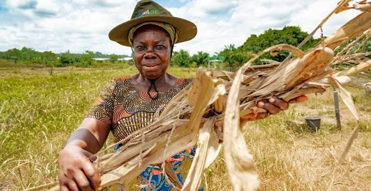

Our Mission
To provide sustainable agricultural solutions through quality production, professional consultancy, practical training and innovative agribusiness services that improve livelihoods and promote food security.
Fruitful Dees Ventures Resource is dedicated to building a sustainable agricultural future through crop production, aquaculture, agro-processing, training and professional agribusiness consultancy.

Fruitful Dees Ventures Resource is an agribusiness company dedicated to promoting sustainable agriculture through crop cultivation, aquaculture, agro-processing, quality farm inputs and professional consultancy.
We work with individuals, families and organizations by providing practical training, innovative farming solutions and dependable agricultural products that contribute to food security and economic development.
Everything we do is guided by a commitment to sustainable agriculture, innovation and empowering communities through practical agribusiness solutions.
To provide sustainable agricultural solutions through quality production, professional consultancy, practical training and innovative agribusiness services that improve livelihoods and promote food security.
To become a trusted leader in sustainable agriculture by delivering innovative farming solutions, quality products and capacity-building programmes that create lasting value.
Our values define how we serve our customers, strengthen communities and deliver sustainable agricultural solutions with excellence.
Promoting responsible farming practices that protect natural resources for future generations.
Delivering dependable agricultural products and services that consistently exceed expectations.
Building lasting relationships through honesty, transparency and accountability.
Embracing modern agricultural practices that improve productivity and efficiency.
Equipping farmers and communities with practical skills, knowledge and confidence.
Putting our clients first by understanding their needs and delivering lasting value.
We combine practical experience, quality agricultural solutions and customer-focused service to help individuals, families and businesses achieve sustainable growth.
Receive practical advice and professional support tailored to your agricultural goals.
We embrace innovative farming methods that improve productivity and sustainability.
We provide dependable agricultural products and inputs that support successful farming.
Our solutions promote environmentally responsible agriculture for long-term success.
We empower individuals, families and communities through knowledge and opportunity.
From consultation to implementation, we remain available to support every step.
Whether you're starting a new farm, expanding your agribusiness or looking for expert guidance, Fruitful Dees Ventures Resource is here to help you succeed.